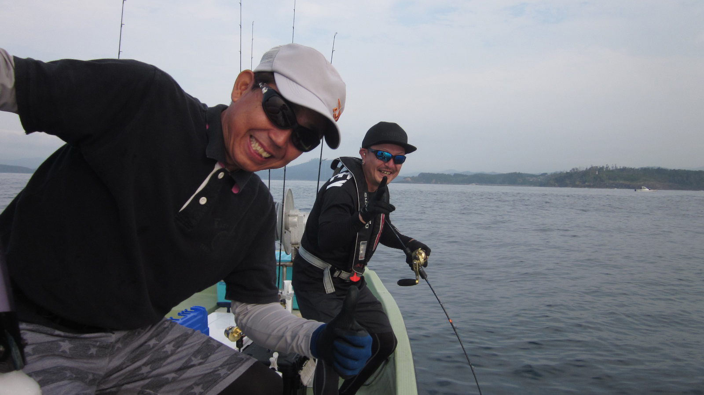
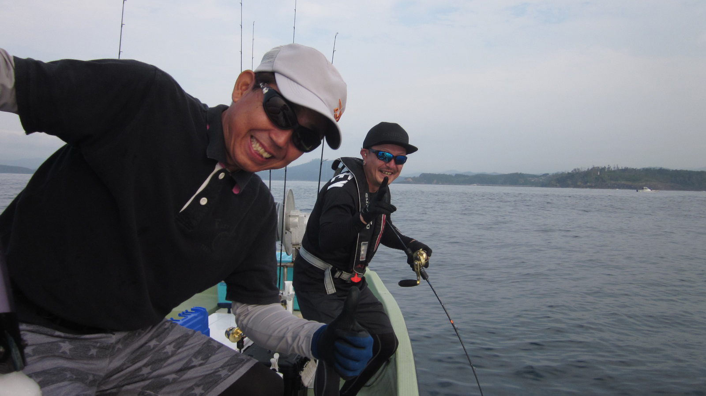

自己紹介とご挨拶
私が船長の高橋です！
（常連I氏と一緒にポーズ！）
| 名前 | 高橋 仁 |
|---|---|
| 生年月日 | 1964年7月29日 |
| 出身地 | おっとりしてる様で実は厳しい！？ |
| 釣歴 | ３０年以上 |
| 好きな食べ物 | 魚 |
| 嫌いな食べ物 | ほとんど無し |
| 趣味 | ジギング |
| 好きな言葉 | 『マグロだ！』 |
| 目標 | どんな魚も狙って釣らせるスーパーガイド船長 |

デカカジカと一緒に！

サクラマスと一緒に！
私が船長の高橋です！
（常連I氏と一緒にポーズ！）
| 名前 | 高橋 仁 |
|---|---|
| 生年月日 | 1964年7月29日 |
| 出身地 | おっとりしてる様で実は厳しい！？ |
| 釣歴 | ３０年以上 |
| 好きな食べ物 | 魚 |
| 嫌いな食べ物 | ほとんど無し |
| 趣味 | ジギング |
| 好きな言葉 | 『マグロだ！』 |
| 目標 | どんな魚も狙って釣らせるスーパーガイド船長 |
デカカジカと一緒に！
サクラマスと一緒に！
ガイド艇の紹介です。

エンジンは２０１９年に載せ替え。
パワーアップして帰ってきました。
このエンジンにしてからは大船渡方面も射程圏内です。

魚探はHONDEX製を使用。
これまでの釣行による豊富なデータが記録されています。
ミヨシ側が３名まで。私の隣の操縦席脇に１名までの、合計４名様まで乗れます。
２０１９年８月３１日、日本テレビ系列で放送された『これが日本最強のネタ決定！三陸の極上寿司』という番組の中で、俳優の福山康平さんと共演させていただきました。
番組の企画は『三陸の美味い寿司ベスト１０を決める』という内容で、そのうちの一貫の素材を福山さんが実際に釣るという内容でした。
収録中は福山さんが船酔いに苦しみながら４２ｃｍのアイナメを釣り、無事に審査役の船越英一郎さんにお寿司を食べて頂けたとの事で私としても安心しました。
俳優の福山さんと一緒にテレビへ！
アイナメがお寿司になりました。
２０１９年８月、zipにてココリコ田中さんと、ミヤギテレビの福盛田悠アナと共演しました。
番組の企画は『気仙沼の魅力を紹介する』という内容で、私は気仙沼港付近を回遊しながらガイドしました。

朝の番組へ出演
ここからはガイド当日のイメージ写真を紙芝居風にまとめました。当船に乗船された時のイメージを感じて頂けるかと思います。
※ここから下の画像はIE非対応です。IE以外のブラウザでご高覧頂ける様お願い致します。
朝の出港前はお客様とコミュニケーション。ジグの色や重さの打ち合わせをします。
朝の気仙沼港の前を通って出船します。
ポイントに着いたらタナを確認しますので、思い思いにジグをしゃくって下さい。
大物が掛かったらタモ掛けです。できる限り私が対応しますが、お客様同士でもタモ掛けして下さいますと幸いです。
あまりにも魚が大きい場合モリで突いて引き上げます。大抵は1人で上げられない魚なので、手の空いている方は助太刀お願いします。
お客様そっちのけで自分が大物を掛けてしまう事もありますが、ご愛敬下さい（笑）
港に帰港後は計量と写真撮影です。お疲れ様でした！
この様な感じでガイドさせて頂いておりますｗ
皆様方の釣りライフに貢献できる様、今後も努力していく所存に御座いますので、是非一度当ガイド艇をご利用下さいませ。
ご利用お待ちしてます。